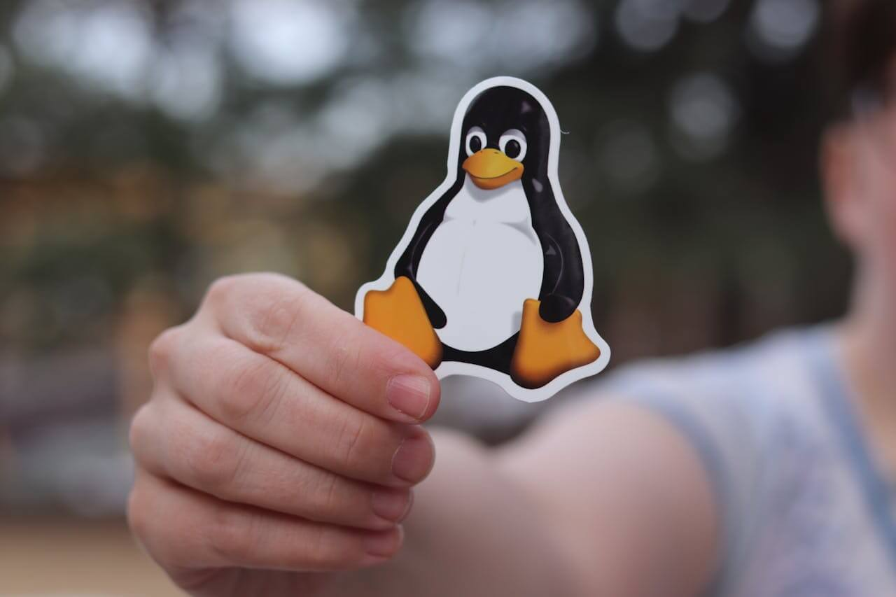

Webwiz
Netwerk gestructureerd bekabelen

Een overzicht van mijn meest impactvolle projecten
Netwerk gestructureerd bekabelen
Netwerk structuur opbouwen en configureren
Root toegang verkrijgen op Linux servers
Openstack implementeren als een homelab

Een commandline tool bouwen met Python

Ansible gebruiken om een webserver te configureren